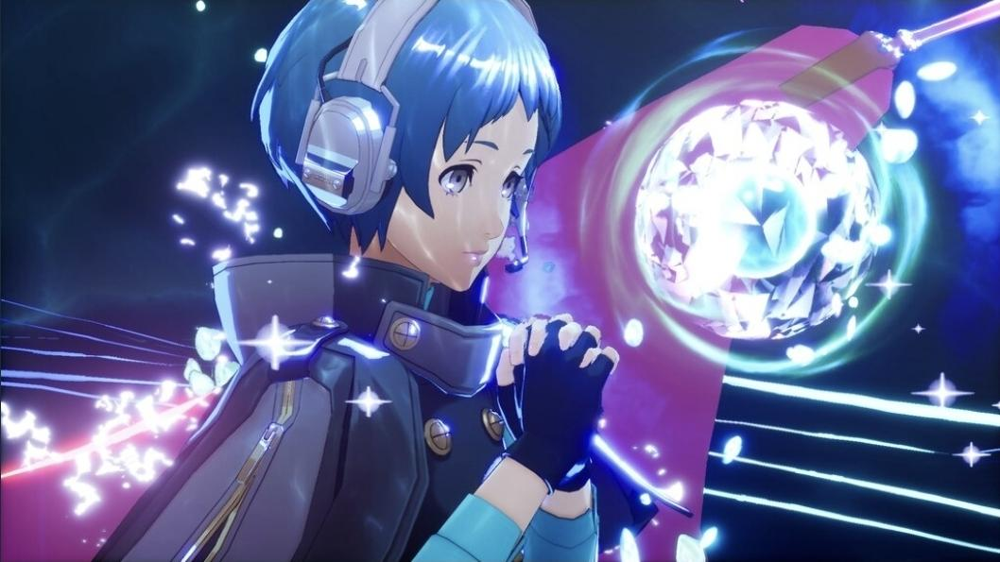

Fuuka Yamagishi
Fuuka Yamagishi is een verlegen tweedejaars student. Ze fungeert als de onmisbare navigator van S.E.E.S. vanuit de lobby. Met haar Persona ondersteunt ze het team met geavanceerde analyses en tactische ondersteuning in Tartarus.